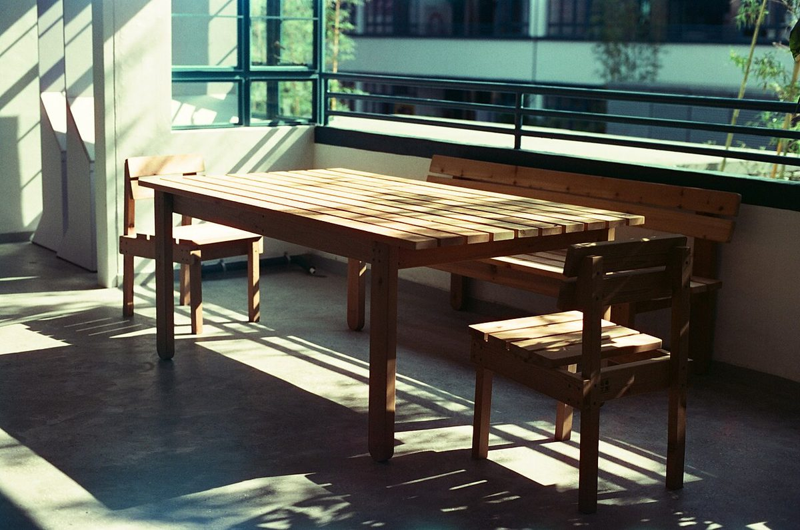
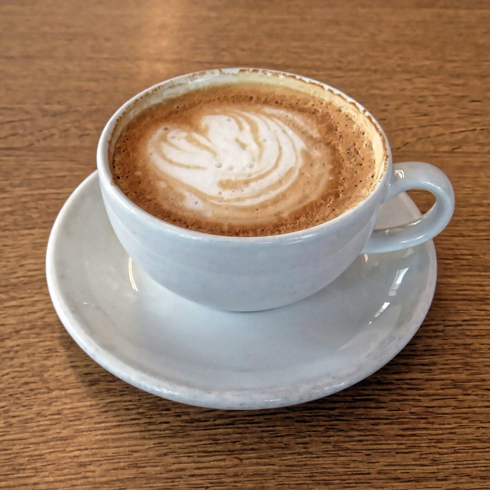
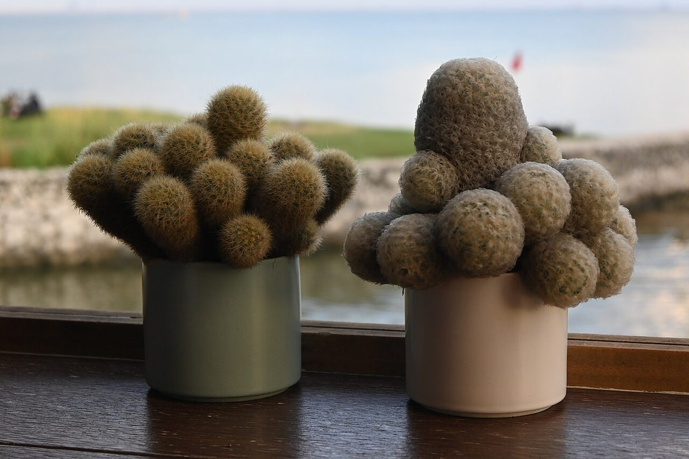
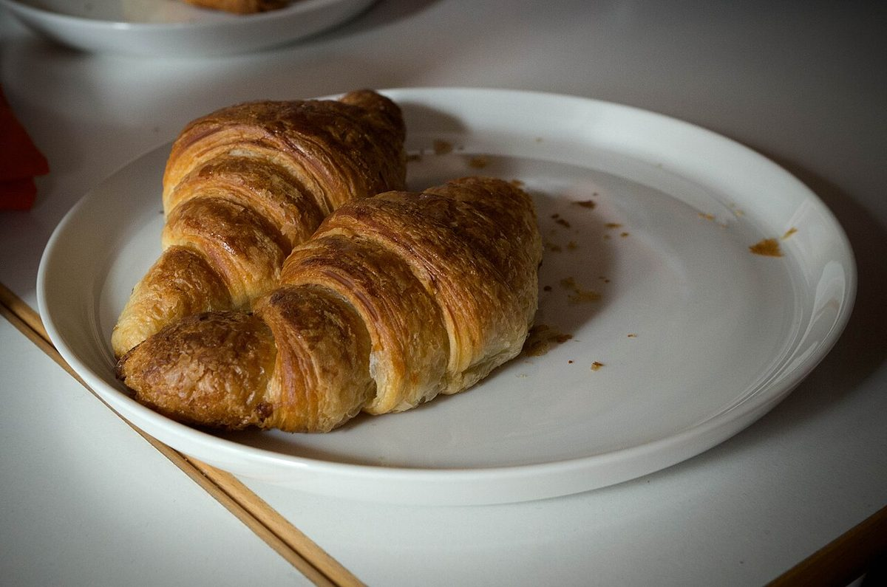

ゆっくり過ごす時間を
このページの紹介文は、制作側の案です。店舗に確認した内容ではありません。
ひと息、ゆっくり、通り沿いで
制作側の案として、このお店の紹介を考えました。
足利市の通2丁目にある、カフェ(ビストロ業態)です。
ひと休みしたいとき、食事の時間をゆっくり過ごしたいときに、気軽に立ち寄れるお店を思い描いています。
詳しいメニューや営業時間は、お電話またはInstagramでご確認ください。



お店の情報
- 住所
- 栃木県足利市通2丁目12-15 THビル
- 営業時間
- 準備中(お問い合わせください)
- 定休日
- 準備中(お問い合わせください)
- @tumuji_grilandjellystand(Instagramを見る)